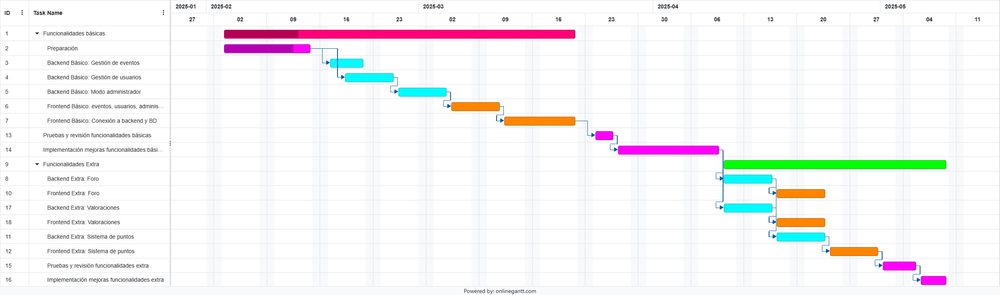

Lista de enlaces:
indice,
detalles,
bocetos,
miembros,
contacto
Planificación
Nuestra planificación para llevar a cabo este proyecto se dividirá en varias fases:
-
Preparación: diseño y planteamiento de la página web, sus funcionalidades, aspecto, etc...
También se llevará a cabo en esta fase la configuración de los entornos de desarrollo, github, etc.
-
Funcionalidades Básicas: en esta fase de desarrollo, se llevará a cabo la implementación de las funcionalidades básicas, imprescindiles para un funcionamiento mínimo de la página web, y su consecuente posibilidad de depuración y planteamiento de posibles mejoras futuras.
Durante esta fase se desarrollaran tanto el backend como el frontend de los módulos eventos, usuarios y administrador.
-
Funcionalidades Extra: en esta fase se llevarán a cabo las funcionalidades más "secundarias", prescindibles si se tratara de sacar la página web lo antes posible, pero no menos necesarias para ofrecer la experiencia que pretendemos dar a los usuarios.
En esta fase se implementarán los módulos foro y valoraciones, y el sistema de puntos. El desarrollo de foro y valoraciones se hará de manera paralela.
Tanto en las funcionalidades básicas como en las extra, para cada módulo se desarrollará primero el backend y luego el frontend, y una vez finalizados todos, se rllevará a cabo una revisión y pruebas de todos ellos.
Una vez finalizadas, se llevará a cabo una línea base y se organizarán una serie de mejoras a realizar para conseguir el producto final deseado.
Diagrama de Gantt
